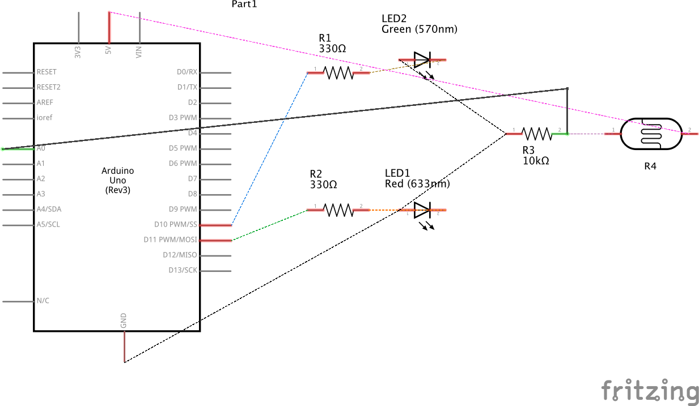
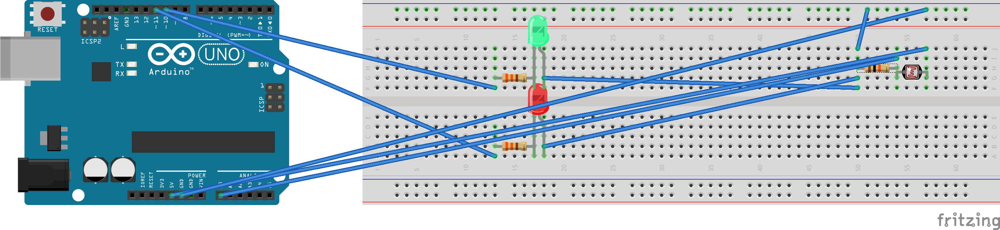

Garrett's Final Project - Stall Usage Indicator!
Stall Usage Indicator
Schematic
I used a photoresistor to convert to serial monitor values and a green LED to translate serial monitor values to brightness as a visual affordance. Key parts of the schematic include: green LED, red LED, two 330 ohm resistors, photoresistor, and 10k ohm resistor connected to input Analog 0.
Circuit
Firmware
The sketch.js file populates available or in use text to a webpage using p5. When a door is closed, the webpage will update with "in use" and the man on the toilet will appear. When a door is open, the text will update with "available" and the happy toilet will appear. Also, for QA and number tracking, top-left shows the serial translated value.
P5.js Code
var serial; // variable to hold an instance of the serialport library
var sensorValue = 0; // declare sensor variable
var col; // declare background color variable
let img; // declare image variable
let img2; // declare second image
function setup() {
col = color(30, 144, 255); // initialize a color for col variable
createCanvas(1300, 650); // create background canvas
serial = new p5.SerialPort(); // make a new instance of serialport library
serial.on('list', printList); // callback function for serialport list event
serial.on('data', serialEvent);// callback for new data coming in
serial.list(); // list the serial ports
serial.open("/dev/cu.usbmodem1421"); // open a port
img = loadImage('assets/toilet.jpg'); // load the image
img2 = loadImage('assets/man-sitting-toilet.jpg'); // load the second image
}
function draw() {
background(col); // fill background with color
fill(255); // fill space for text on screen
text("Bathroom Stall Usage Indicator", 585, 250); // Create heading for page
text(sensorValue, 20, 20); // Track sensor value in top-left of page
// Show usage status, if sensor value is above a certain number, show available text. If sensor
// value is below a certain number, display in use.
if(sensorValue > 5) {
// populate text that stall is available, at the middle of the page
text("The bathroom is: available", 600, 300);
// Displays the image at point (0, height/2) at half size
image(img, 50, height / 4, img.width / 4, img.height / 4);
}
else{
// populate text that stall is in use, at the middle of the page
text("The bathroom is: in use", 600, 300);
// displays the image at point (0, height/2) at half size
image(img2, 50, height / 4, img2.width / 4, img2.height / 4);
}
}
// get the list of ports:
function printList(portList) {
for (var i = 0; i < portList.length; i++) {
// display the list the console:
println(i + " " + portList[i]);
}
}
// read the value from serial port
function serialEvent() {
// initialize variable for reading serial port
var inString = serial.readLine();
// convert sensor value to readable number
if (inString.length > 0) {
inString = inString.trim();
sensorValue = Number(inString/4);
//println(sensorValue);
}
}
Arduino Code
/*
* Garrett Mar
* HCDE 439
* Final Project
*/
// Analog input mapped to the A0 pin
int analogInPin = 0;
// Red LED connected to pin 11
int redpin = 11;
// Green LED connected to pin 10
int greenpin = 10;
// The analog reading from the sensor divider
int sensorValue;
// The output value from mapping function and sensorValue
int outputValue;
void setup() {
// Initialize serial communications at 9600 bps:
Serial.begin(9600);
}
void loop() {
// Read the value from the analogInPin, A0
sensorValue = analogRead(analogInPin);
//Map output 0-1023 to 0-255 to the range analogWrite uses
outputValue = map(sensorValue, 0, 1023, 0, 255);
// If sensor value is greater than 30, turn green LED on
if (sensorValue > 30) {
// Set red LED to zero, turned off
analogWrite(redpin, 0);
// Set green LED to 255, turned on
analogWrite(greenpin, 255);
// Print Green LED on statement to serial monitor
Serial.println("Green LED on");
// Track sensor value in serial monitor
Serial.println(sensorValue);
}
// If sensor value is not greater than 30, turn green LED off
else {
// Set value of green LED to 255, turned on
analogWrite(redpin, 255);
// Set green LED to 0, turned off
analogWrite(greenpin, 0);
// Print Red LED on statement to serial monitor
Serial.println("Red LED on");
// Track sensor value in serial monitor
Serial.println(sensorValue);
}
// Wait 100 milliseconds before the next loop for the analog-to-digital
// converter to settle after the last reading:
delay(100);
}
Operating Circuit
Here is an animated GIF of everything in action! The webpage will indicate if a stall is in use or available. This webpage is connected to the hardware, which is the indicator for if a door is opened or closed. Note: I used a door in my room, as it was awkward and not sure if legal to film in a public restroom. However, the restroom stall uses very similar environment, the light might be brighter in the restroom but the code would be adjusted based on the light in the restroom. Another constraint is that the prototype and a laptop would need to be planted in the restroom somewhere. For future iterations, the hardware/breadboard could be planted on the stall door and the laptop could be replaced with a bluetooth communication device. For the purposes of this class, the prototype below does the job well, with a regular door.